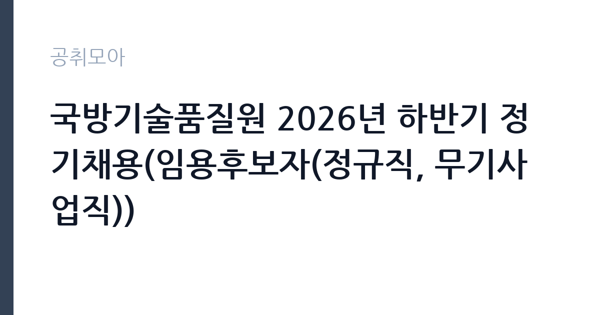

[공공기관] 국방기술품질원 2026년 하반기 정기채용(임용후보자(정규직, 무기사업직))
국방기술품질원 · 부산 · 마감 2026-11-05 (D-14) · 출처 잡알리오

한눈에 보는 모집 조건
| 기관 | 국방기술품질원 |
|---|---|
| 공고명 | 국방기술품질원 2026년 하반기 정기채용(임용후보자(정규직, 무기사업직)) |
| 고용형태 | 정규직 |
| 근무지 | 부산 |
| 게시일 | 2026-10-22 |
| 마감일 | 2026-11-05 (D-14) |
지원자격, 이렇게 읽으세요
- 공공기관 채용공시
- 세부 조건은 원문 공고문 확인
정규직 채용은 기간의 정함이 없는 근로계약을 전제로 합니다. 수습 기간을 두고 평가한 뒤 정규직으로 확정하는 절차가 일반적이며 기관의 인사 규정과 임금 체계를 적용받습니다. 이번 공고는 국방기술품질원에서 직접 진행하는 자체 전형으로, 응시자격과 제출서류는 공고문에 항목별로 제시됩니다. 운전 직무는 무엇보다 면허 종류와 실제 운전 경력이 기준입니다. 1종 보통 또는 1종 대형 면허를 요구하는 경우가 많고, 화물이나 버스 운전은 별도 자격이 필요합니다. 최근 3년 또는 5년 내 교통사고와 음주운전 이력이 없어야 한다는 조항이 자주 붙습니다. 운전 경력 증명서나 보험 가입 이력으로 이를 증빙해야 하므로 미리 발급받아 두십시오. 장거리 운행이 포함되면 건강 상태와 야간 운전 가능 여부도 확인합니다. 서류는 접수 마감 이후 보완이 되지 않으므로 자격 요건과 증빙 서류를 마감 전에 모두 갖춰야 합니다. 공고문에 명시된 우대 사항은 해당 여부를 확인해 증빙을 첨부해야 가점이 반영됩니다. 자격 취득 예정자는 채용 공고의 예정자 허용 조항을 먼저 확인해야 합니다. 조항이 없으면 지원 자체가 반려될 수 있습니다.
이 공고의 포인트
이 공고의 첫 번째 포인트는 고용 형태입니다. 수습 기간 평가를 통과하면 기간의 정함이 없는 신분이 되어 고용이 안정됩니다. 두 번째는 업무 범위가 명확하다는 점입니다. 운전 직무로 채용되므로 배치 이후 담당 업무가 크게 흔들리지 않습니다. 세 번째는 근무지입니다. 부산 지역 근무로 수도권 공고에 비해 지원자 분포가 넓지 않아 상대적으로 경쟁이 분산되는 경우가 있습니다. 근무 조건이 공고문에 구체적으로 적혀 있어 지원 전에 판단할 정보가 충분합니다. 같은 직무로 함께 올라온 공고 가운데 접수 마감이 가장 늦은 편이라 준비 시간을 상대적으로 확보할 수 있습니다. 선발 인원은 공고문에 명시되어 있으니 모집분야 항목을 함께 확인하십시오.
전형은 어떻게 진행되나
전형은 서류심사와 면접심사를 기본으로 하고 직무에 따라 필기나 실기, 체력검정이 추가됩니다. 서류 단계에서는 응시자격 충족 여부와 제출서류 형식을 확인하며 이 단계에서 탈락하는 지원자가 적지 않습니다. 면접은 직무 이해도와 경험을 확인하는 방식으로 진행되고 발표는 개별 통보나 홈페이지 게시로 이뤄집니다. 최종합격 이후에는 결격사유 조회와 채용 신체검사가 이어지며 이 절차에서 문제가 확인되면 합격이 취소될 수 있습니다. 구체적인 전형 단계와 배점은 공고문에 표로 정리되어 있으니 원문을 기준으로 준비하십시오. 면접조 편성과 대기 시간이 공지되므로 당일 도착 시간을 여유 있게 잡으십시오.
원문에서 확인한 전형 방식
[공통요건] 임용예정일(‘27.1월 이후) 기준 정년 만 61세 미만자 공고문 명시 결격사유 미해당자 [연구직] 영어성적 공통요건 -(기준 점수 이상)TOEIC 700점, TEPS 340점, TOEFL 71점(IBT), G-TELP Level2 65점, FLEX 625점, TOEIC Speaking IM2(120점), TEPS Speaking 51점, OPIC IM1 -외국 학/석/박사 학위자, 장애인 지원자 : 영어성적 요건 면제 [직무별 요건] 세부 직무별 요건은 직무기술서 참조
이런 분께 추천해요
- 요구 면허를 보유하고 운전 경력이 충분한 분
- 교통사고·음주운전 이력이 없는 분
- 차량 점검과 운행 기록을 성실히 관리하는 분
지원 전 체크리스트
- 응시자격 요건과 경력 기준을 충족하는가 — 경력은 증명서로 입증해야 합니다
- 수습 기간과 정규직 전환 조건을 확인했는가
- 제출서류 목록을 모두 준비했는가 — 누락 시 서류 단계에서 탈락합니다
- 접수 마감 2026-11-05 이전에 접수 방식을 확인해 제출했는가
모집 일정과 제출 타이밍
접수 마감은 2026-11-05이고 공고는 2026-10-22에 게시되었습니다. 준비 기간 14일 안에 서류 작성, 증빙 발급, 접수를 모두 마쳐야 하므로 주말을 포함해 일정을 미리 나누는 것이 좋습니다. 특히 경력 기술서나 직무수행계획서를 요구하는 공고는 작성에 시간이 걸리므로 첫날 초안을 잡으십시오. 서류 합격자 발표와 면접 사이 간격이 짧은 경우가 많아 면접 예상 질문은 서류 제출 전에 정리해 두는 편이 유리합니다. 마감 직전에는 접속이 몰리므로 여유를 두고 제출하십시오. 공휴일이 끼어 있으면 증명서 발급이 늦어질 수 있으니 발급 일정을 앞당기십시오. 부산 근무지는 지역 안에서도 이동 시간이 길어 근무지 위치를 구체적으로 확인하는 것이 좋습니다. 마감까지 2주 안팎이 있어 준비할 시간은 있지만 미루면 촉박해집니다. 선발 인원은 공고문의 모집분야 항목에 직종별로 제시되어 있습니다.
직무 이해하기: 공공기관
이 기관은 공공 서비스 제공을 목적으로 설립된 공공기관으로, 채용 공고에 따라 부서별 실무 인력을 선발합니다. 기관의 사업 범위와 조직 구성은 홈페이지에서 확인할 수 있으며 채용 절차는 자체 인사 규정을 따릅니다. 운전 직무는 기관 차량을 운행해 사람이나 물품을 옮기는 일입니다. 출발 전 차량 상태와 연료, 안전 장비를 점검하고 운행 일지를 기록합니다. 업무용 승용차, 승합차, 화물차, 청소 차량 등 담당 차량에 따라 필요한 면허가 달라집니다. 목적지와 시간이 매일 달라지므로 일정 관리와 대기 시간이 업무의 상당 부분을 차지합니다. 사고 예방과 차량 관리, 승객 응대 태도가 평가에 포함됩니다. 업무는 혼자 처리하기보다 부서 단위로 나눠 진행되므로 담당 구역과 협업 범위를 입사 초에 확인하는 것이 중요합니다. 업무 강도와 근무 시간대는 부서 배치에 따라 달라지므로 면접에서 확인하는 것이 가장 정확합니다.
자기소개서 작성 팁
운전 지원서의 핵심은 무사고와 책임감입니다. 운전 경력 연수, 주행 거리, 무사고 기간을 수치로 제시하십시오. 차량 점검을 습관적으로 해온 방식이나 위험 상황에서 사고를 피한 경험을 구체적으로 쓰면 설득력이 높아집니다. 승객이나 이용자 응대 경험이 있다면 서비스 태도의 근거로 연결하십시오. 직무 경험이 많지 않다면 경험의 양보다 과정을 구체적으로 쓰는 편이 낫습니다. 어떤 상황에서 무엇을 판단했고 어떤 결과가 나왔는지 순서대로 서술하면 신뢰가 생깁니다. 지원 동기와 기여 방안은 한 문단씩 짧게 유지하고, 가장 자신 있는 경험에 분량을 몰아주십시오. 마지막 문장은 포부보다 구체적인 실행 계획으로 끝내는 것이 좋습니다.
면접 준비 포인트
면접에서는 안전 운전 습관과 상황 대응을 봅니다. 사고가 났을 때 어떤 순서로 조치할지, 승객이 시간을 지키지 않을 때 어떻게 대응할지, 차량 고장 시 어떻게 처리할지 묻습니다. 차량 관리 기록을 어떻게 해왔는지 구체적으로 답하면 신뢰를 줍니다. 무사고 경력과 장거리 운행 경험은 강점입니다. 답변은 상황, 판단, 조치의 순서로 정리하면 전달이 분명해집니다. 모르는 질문에는 모른다고 밝히고 확인 방법을 제시하는 편이 억지 답변보다 낫습니다. 마지막에는 근무 의사와 함께 2026-11-05 이후 일정에 언제든 응할 수 있다는 점을 전달하십시오. 면접 당일 신분증과 제출서류 원본을 요구하는 경우가 있으니 공고문의 준비물 목록을 확인하십시오.
급여·근무조건 읽는 법
운전 직무의 보수는 기관 임금표에 따른 기본급과 각종 수당으로 구성되며, 장거리·야간 운행이 있으면 여비와 초과근무수당이 추가됩니다. 무기계약직이면 정년까지 근무가 가능하고 기간제라면 계약 기간이 정해집니다. 2026년 최저임금은 시급 10,320원, 월 환산 2,156,880원이므로 최소 기준으로 확인하십시오. 차량 유지와 유류비를 기관이 부담하는지 공고문에서 확인해야 합니다. 세부 금액은 원문 보수표에 있습니다. 2026년 적용 최저임금은 시급 10,320원, 월 환산 2,156,880원(주 40시간·209시간 기준)입니다. 고용노동부 고시 제2025-47호로 확정된 금액입니다. 공고문에 금액이 제시되지 않은 항목은 원문 보수표나 처우 설명에서 확인해야 하며 확인되지 않은 수치는 쓰지 않는 것이 원칙입니다. 비교할 때는 월 급여뿐 아니라 상여·명절휴가비·복지포인트·초과근무수당까지 포함한 연간 총액으로 계산하십시오. 기간제라면 계약 기간 동안의 총액을, 무기계약이라면 호봉 상승과 정년까지의 누적 소득을 기준으로 판단하는 편이 정확합니다.
자주 묻는 질문
- 선발 인원은 몇 명인가요?
공고문의 모집분야 항목에 직종별 인원이 표로 제시되어 있습니다. 첨부된 공고문 원문에서 확인하십시오. - 근무지는 어디인가요?
부산 지역의 국방기술품질원 소속 근무지입니다. 세부 주소와 출퇴근 조건은 원문 공고문에서 확인할 수 있습니다. - 보수는 얼마인가요?
채용 신분(정규직)과 기관 임금 규정에 따라 정해지며 구체적인 금액은 공고문 처우 항목에 제시됩니다. 금액이 공개되지 않은 경우에는 원문의 보수표를 확인하십시오.
함께 보면 좋은 공고
[공공기관] 계약직(보건직,행정직,연구직,시설직) 공개채용 모집 공고 — 마감 2026-11-06[공공기관] (거창적십자병원) 초단시간 근로자 보건직 물리치료사 1차 채용 — 마감 2026-11-08[공공기관] [제2026-121호] 2026년도 제5차 전남광주통합특별시광주장애아동·발달장애인지원센터 (장애아동지원팀)체험형 청년인턴(장애인 제한경쟁) 채용 공고 — 마감 2026-11-06출처: 잡알리오 공개정보를 바탕으로 공취모아가 정리한 안내글입니다. 모집 조건·일정은 변경될 수 있으니 지원 전 반드시 원문 공고문을 확인하세요. 본 글은 정보 제공용이며 합격을 보장하지 않습니다.